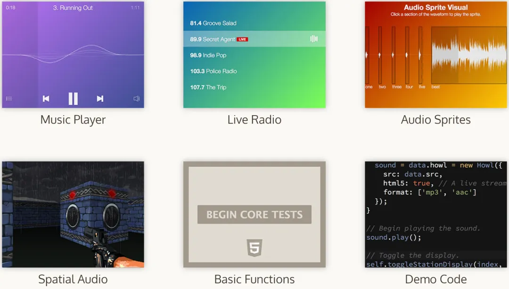

HaoTian · 2024-12-23 16:46:03
howlerjs 是一个轻量级的 JavaScript 音频库，适用于在 Web 应用中集成音频功能，无论简单的背景音乐播放，复杂的音频、游戏，3D 音效管理，howler 都可以提供强大而灵活的音频控制能力，包括播放、暂停、快进、快退、调整播放速率、音量控制、淡入淡出效果和循环播放等。
安装使用：
import { Howl, Howler } from "howler";
// 初始化
const sound = new Howl({
src: ["sound.webm", "xxx.mp3"],
});
// 播放
sound.play();
// 音量控制
Howler.volume(0.5);
示例：
src：定义要加载的音频轨道的源文件，可以是 URL 或 base64 数据。如果文件没有扩展名，需要使用 format 属性明确指定格式。
volume：设置特定音轨的音量，范围从 0.0 到 1.0。
html5：是否强制使用 HTML5 Audio，适用于大文件，以便不必等待整个文件下载和解码完成即可播放。
loop：是否无限循环播放。
preload：是否自动开始下载音频文件。如果使用 HTML5 Audio，可以设置为 'metadata' 预加载数据。
autoplay：是否自动开始播放。
mute：是否加载时静音音频。
sprite: 定义音频精灵。偏移量和持续时间以毫秒为单位定义。可选的第三个参数用于设置精灵是否循环。
rate：设置播放速率，范围从 0.5 到 4.0，1.0 为正常速度。
pool：定义非活动声音池的大小。停止或播放结束的声音会被标记为结束并准备清理，以提高性能。
format：howler 会自动检测文件格式，但在某些情况下（如 SoundCloud 流）可能需要明确指定格式。
xhr：使用 Web Audio 时，howler 使用 XHR 请求加载音频文件。如果需要发送自定义头部、设置 HTTP 方法或启用 withCredentials，可以使用此参数。
onload：当声音加载完成时触发。
onloaderror：当声音无法加载时触发。
onplayerror：当声音无法播放时触发。
onplay：当声音开始播放时触发。
onend：当声音播放结束时触发（如果是循环播放，则在每次循环结束时触发）。
onpause：当声音被暂停时触发。
onstop：当声音被停止时触发。
onmute：当声音被静音或取消静音时触发。
onvolume：当声音的音量改变时触发。
onrate：当声音的播放速率改变时触发。
onseek：当声音被快进或快退时触发。
onfade：当声音完成淡入或淡出时触发。
onunlock：当音频通过触摸/点击事件自动解锁时触发。
orientation：设置音频源在 3D 笛卡尔坐标空间中指向的方向。根据声音的锥形属性，指向远离监听器的声音可能会变得安静或无声。数组中的三个值分别代表在 X、Y、Z 轴上的方向向量，默认值为 [1, 0, 0]。
stereo：设置音频源的立体声平移值，用于控制声音在左右声道之间的平衡。-1.0 表示完全在左侧，1.0 表示完全在右侧。
pos：设置音频源在 3D 空间中的位置，相对于全局监听器的位置。数组中的三个值分别代表在 X、Y、Z 轴上的位置。
pannerAttr：设置声音或声音组的 panner 节点属性。可以使用 pannerAttr 方法来设置所有可用的选项。
onstereo：当当前声音的立体声平移值改变时触发。
onpos：当当前声音的监听器位置改变时触发。
onorientation：当当前声音的监听器方向改变时触发。
音频精灵：允许开发者将多个音频片段组合到一个文件中，这样可以减少 HTTP 请求的数量，提高加载效率。
空间音频：howler 支持立体声和 3D 音频效果，使得开发者可以创建具有空间感的音频体验。
全编解码器支持：howler 支持多种音频格式，包括但不限于 MP3、MPEG、OPUS、OGG、OGA、WAV、AAC、CAF、M4A、MP4、WEBA、WEBM、DOLBY 和 FLAC。
跨平台兼容性：howler 默认使用 Web Audio API，如果浏览器不支持，则回退到 HTML5 Audio。这种设计确保了它可以在所有主流浏览器和平台上运行。
自动缓存：howler 会自动缓存加载的音频文件，并在后续的调用中重用这些缓存，这样可以提高性能并减少带宽消耗。
模块化：howler 的模块化架构允许开发者只加载所需的部分，这样可以减少最终应用的体积。同时，开发者也可以根据需要扩展库，添加自定义功能。
游戏开发：在游戏开发中，howler 可以用来管理背景音乐、音效和角色语音。
多媒体应用：在需要播放音频的多媒体应用中，howler 提供了丰富的控制选项和良好的用户体验。
教育工具：在教育应用中，howler 可以用来创建互动式音频教程和语音反馈。
音乐播放器：howler 可以用来创建自定义的音乐播放器，支持多种音频格式和播放控制。